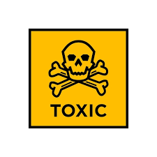

Toxicity
Element with Atomic Number 42
Symbol: Mo
Mass: 95.95 u
Category: Transition Metal
Health & Safety Information
General Toxicity
Generally low toxicity in small amounts
Biological Role
Essential Nutrient in trace amounts
Exposure Risks
- Lung irritation if inhaled as dust
- Kidney damage in high doses
- Molybdenosis in livestock
Safety Precautions
When working with molybdenum compounds or dust, proper ventilation and respiratory protection should be used. Avoid prolonged skin contact with soluble compounds.